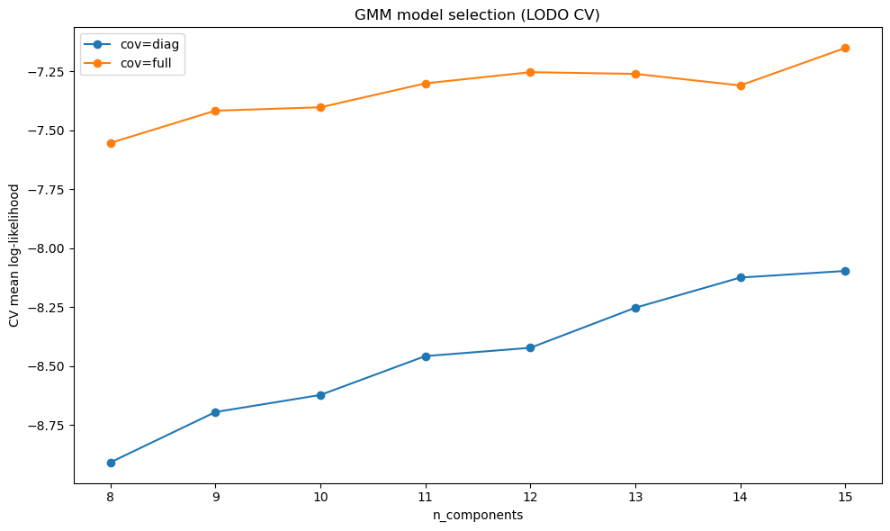

Mean reversion trading is based on the principle that prices tend to revert toward their average after periods of overextension. To develop a consistent strategy, we leverage machine learning to make predictions on market data while additionally optimizing performance for low-capital intraday trading.
Key features for mean reversion include VWAP, volume weighted average price, or "the price a 'naive' trader can expect to obtain," and anchored VWAP (AVWAP), which tracks trend direction from a user‑set anchor point [1]. Bollinger Bands provide secondary signals of overbought/oversold conditions through volatility envelopes [2]. The triple barrier method labels trades realistically via profit‑taking, stop‑loss, and time limits [3], while event‑based sampling reduces time‑bar heteroskedasticity [3].
Gaussian mixture models can be used to determine probabilistic overextension scores from joint features, and adapt better to regime shifts than z‑scores [4]. Random Forests handle nonlinear, correlated data well [5]; paired with sequential bootstrap, there is less label‑overlap bias [3]. The probabilities output by this model indicate position sizes and whether to trade/not trade. Gradient‑boosted trees adapted for quantile regression can be used for exit sizing by predicting conditional quantiles for dynamic stops and targets; they outperform classical methods in high‑dimensional settings [6][7].
Lastly, model evaluation requires careful consideration. Traditional random test/train splits fail for financial data because features and labels are serially correlated [3]. Purged k‑fold with embargo removes overlap between samples, and combinatorial purged cross-validation (CPCV) returns a distribution of out‑of‑sample metrics from purged k-fold, providing a more reliable measure of model performance [3].
The raw dataset is composed of tick data for 20 liquid U.S. equities, selected from the S&P 500 using price, liquidity and volatility screens. Data were collected over five trading days (October 2, 3, 6, 7 and 8 of 2025) during regular trading hours, excluding the opening and closing five minutes. Each day's file contains millisecond‑timestamped trade prints and quote updates exported from a Bloomberg Terminal. In total the raw universe spans about 21.4 million tick records; after cleaning and consolidation (deduplication, NBBO construction and condition‑code filtering) we have about 1.13 million valid trades across all stocks and days.
The 20 selected stocks and their screening statistics are listed below. They cover a broad range of sectors and satisfy our
price, liquidity and ATR% criteria. LastClose is the most recent adjusted close price, ADV60d is
the mean dollar volume over the previous 60 trading days, and ATRpctMed20 is the median 20‑day Average True
Range percentage.
| Ticker | Company | Sector | LastClose ($) | ADV60d ($) | ATR% (20‑day median) |
|---|---|---|---|---|---|
| INTC | Intel | Information Technology | 37.01 | 3.30e9 | 4.83 |
| SMCI | Supermicro | Information Technology | 57.69 | 1.63e9 | 4.13 |
| TTD | The Trade Desk | Communication Services | 53.30 | 1.05e9 | 4.38 |
| XYZ | Block Inc. | Financials | 80.17 | 7.76e8 | 3.27 |
| FCX | Freeport‑McMoRan | Materials | 43.15 | 7.69e8 | 4.67 |
| CCL | Carnival | Consumer Discretionary | 28.70 | 5.92e8 | 3.07 |
| MCHP | Microchip Technology | Information Technology | 65.64 | 5.39e8 | 3.09 |
| KVUE | Kenvue | Consumer Staples | 16.53 | 4.98e8 | 4.39 |
| CNC | Centene Corporation | Health Care | 38.39 | 4.76e8 | 4.22 |
| DAL | Delta Air Lines | Industrials | 59.70 | 4.52e8 | 3.00 |
| ON | ON Semiconductor | Information Technology | 50.13 | 4.45e8 | 3.47 |
| DLTR | Dollar Tree | Consumer Staples | 88.08 | 4.34e8 | 3.04 |
| PCG | PG&E Corp. | Utilities | 16.53 | 3.83e8 | 3.41 |
| DXCM | Dexcom | Health Care | 67.80 | 3.64e8 | 4.58 |
| DOW | Dow Inc. | Materials | 21.94 | 3.58e8 | 3.74 |
| NCLH | Norwegian Cruise Line | Consumer Discretionary | 23.58 | 3.56e8 | 3.52 |
| DECK | Deckers Brands | Consumer Discretionary | 99.00 | 3.42e8 | 3.08 |
| UBER | Uber | Industrials | 98.05 | 1.63e9 | 2.93 |
| SLB | Schlumberger | Energy | 33.56 | 5.62e8 | 2.93 |
| EQT | EQT Corporation | Energy | 55.44 | 4.47e8 | 2.95 |
After processing, we construct around 600 volume bars per trading day for each ticker, yielding about 46,855 bars with nine derived features and triple‑barrier labels. The cleaning pipeline achieved an average NBBO coverage of 99.99%, zero negative spreads, and an average duplicate removal rate of 33.07%. The final cleaned dataset contains 1,130,327 trades across all tickers and days.
| Column | Type | Description |
|---|---|---|
| ts | datetime64[ns, UTC] | Trade timestamp in UTC |
| ticker | object | Stock ticker symbol |
| type | category | Event type (TRADE) |
| price | float32 | Trade execution price |
| size | int32 | Trade size in shares |
| cond | object | Raw trade condition codes |
| cond_norm | object | Normalized condition codes |
| exch | category | Exchange identifier |
| nbb | float32 | National best bid price |
| nbo | float32 | National best offer price |
| nbb_size | int32 | National best bid size |
| nbo_size | int32 | National best offer size |
| mid | float32 | Mid-price: 0.5 × (nbb + nbo) |
| spread | float32 | Bid-ask spread: nbo − nbb |
| at_bid | int64 | Flag: trade at bid (1) or not (0) |
| at_ask | int64 | Flag: trade at ask (1) or not (0) |
Traditional retail day trading strategies utilize naive heuristic rules that result in inconsistent performance; this problem is amplified in low-capital accounts, where limited funds magnify risk and reduce flexibility. We reinterpret the task as a machine learning problem: How can we better distinguish true trading signals from market noise? Instead of doing subjective guesswork, we can engineer event-based features, label outcomes, and train models. This way, we can realize profitable outcomes with reliable, risk-adjusted performance using statistics rather than rule-of-thumb trading.
Given an overextension event where price is far from an AVWAP, determine whether the price will revert sufficiently within the next 15–30 minutes to yield a profitable mean‑reversion trade. If a profitable reversion is likely, determine where to set dynamic take‑profit and stop‑loss levels to maximize returns by predicting the distribution of return magnitudes and executing the trade accordingly.
Stock Selection. Tickers were drawn from the S&P 500 and filtered for last close between $10 and $100, belonging to the top half of the dollar‑volume distribution, and exhibiting moderate intraday volatility (ATR% between 3% and 5%). When fewer than 20 tickers satisfied these strict criteria we filled the remainder with names closest to the volatility midpoint while still prioritizing liquidity.
| Metric | Value |
|---|---|
| Raw tick records | 21,419,919 |
| Final cleaned trades | 1,130,327 |
| Retention rate | 5.3% |
| Avg duplicate removal | 33.07% |
| Avg NBBO coverage | 99.99% |
| Avg crossed quotes | 0.52% |
| Trades dropped (condition codes) | 2,005,302 |
| Trades dropped (no NBBO) | 140 |
Cleaning. Bloomberg headers and invalid rows were removed, New York timestamps were parsed to UTC, exact repeats were deduplicated, trades were split from quotes and a National Best Bid and Offer (NBBO) was built by forward‑filling quotes up to 2 seconds. The NBBO construction ensures trades are contextualized against the prevailing market allowing the computation of accurate spreads and assessment of price impact; the 2‑second forward‑fill cap prevents using stale quotes that would misrepresent market conditions. Each trade was merged with the most recent valid NBBO; special condition codes (late reports, auctions, odd lots, extended hours, etc.) were filtered out because these irregular trade types do not reflect normal market liquidity and would introduce bias into our mean‑reversion features. Compressed Parquet files were exported. Quality gates ensured >99% NBBO coverage, zero negative spreads and chronologically ordered timestamps. Average duplicate removal was roughly 33% of raw rows and NBBO crossed quotes occurred in less than 1% of cases.
Bar Type. To determine whether to use volume or dollar bars, we performed EDA on three representative tickers. By examining per‑second flow statistics (coefficient of variation, Fano factor, intraday profiles and zero‑activity periods) we found that dollar‑denominated flows were slightly more bursty and less uniform than share‑based flows. Prototype bars built on dollar thresholds also exhibited more variable inter‑bar durations and less white noise in returns. Consequently we adopted volume bars with ticker‑specific thresholds calibrated as median daily volume divided by 600 (clamped between 2,000 and 100,000 shares). This yields approximately 600 bars per day per ticker; each bar captures the OHLC, VWAP, trade count, duration and volume.
| Ticker | Volume Threshold (shares/bar) | Target Bars/Day |
|---|---|---|
| INTC | 20,500 | ~600 |
| PCG | 8,700 | ~600 |
| KVUE | 7,500 | ~600 |
| SMCI | 6,800 | ~600 |
| CCL | 4,600 | ~600 |
| FCX | 4,600 | ~600 |
| TTD | 2,400 | ~600 |
| NCLH | 2,300 | ~600 |
| CNC | 2,200 | ~600 |
| SLB | 2,200 | ~600 |
| DAL | 2,000 | ~600 |
| Others | 2,000 | ~600 |
Figure 1: Comparison of volume vs. dollar bar metrics.
Feature Engineering. From each volume bar we engineered nine features while avoiding look‑ahead bias. These features best capture mean‑reversion signals: VWAP z‑score and Bollinger position directly measure price overextension from mean levels, which is the overarching signal for mean reversion. Three‑ and five‑bar momentum quantify short‑term trend strength that may reverse. Relative volume indicates unusual activity that often precedes reversions. Time of day accounts for intraday liquidity patterns. The three context variables (bar count, average volume, and price range over the past five minutes) provide microstructure information about recent market conditions that affect reversion probability. All rolling statistics are shifted by one bar to ensure the features do not incorporate the current bar's outcome, strictly preventing look‑ahead bias. The feature distributions are approximately symmetric with moderate tails.
| Feature | Description | Formula / Method |
|---|---|---|
| VWAP z-score | Standardized distance from VWAP | (close − VWAP) / rolling_std(20).shift(1) |
| Bollinger position | Position within Bollinger Bands | (close − BB_mid) / (BB_upper − BB_mid), 20-bar window, 2σ |
| Momentum (3-bar) | Log return over 3 bars | log(close / close.shift(3)) |
| Momentum (5-bar) | Log return over 5 bars | log(close / close.shift(5)) |
| Relative volume | Volume vs. rolling median | volume / rolling_median(20).shift(1) |
| Time of day | Normalized time (0=open, 1=close) | (t − market_open) / market_duration |
| Context: bar count | Number of bars in past 5 minutes | count(bars where t ≥ current_t − 5min) |
| Context: avg volume | Average volume in past 5 minutes | mean(volume where t ≥ current_t − 5min) |
| Context: price range | Price range in past 5 minutes | (max(high) − min(low)) / mean(close) |
Figure 2: Distribution of the nine engineered features.
Labeling. Labels are derived using the triple‑barrier method with volatility‑scaled price barriers and a 20‑minute time horizon.
This approach is preferred over fixed‑price targets or fixed‑time horizons because it adapts to changing volatility regimes
and realistically models how traders exit positions—either hitting a profit target, hitting a stop loss, or timing out. We
compute an exponentially‑weighted rolling standard deviation of returns (halflife = 50 bars) and set upper and lower
barriers at ±1× this volatility from the entry price, ensuring that profit/loss thresholds scale with recent market conditions.
A bar receives a label of +1 if the upper barrier is hit first, -1 if the lower barrier is hit,
or 0 if the time barrier elapses without either price barrier being breached. This reduces path‑dependent
labeling bias and produces more realistic training signals than pure forward returns. Across our processed dataset, up and down
labels are roughly balanced while neutral events are rare. Holding periods cluster around 30–100 seconds.
Figure 3: Triple-barrier label distribution across a data sample.
Cross-Validation. Finally, we partitioned the data using purged, embargoed cross‑validation. Traditional random splits are inappropriate for financial time‑series because both features and labels exhibit serial correlation: a bar's outcome can influence nearby bars through autocorrelation, shared volatility regimes, and overlapping triple‑barrier windows. In a leave‑one‑day‑out (LODO) scheme, we hold out one trading day for testing and train on the remaining days. We purge any training samples whose entry or exit windows overlap the validation period and enforce a 20‑minute embargo after the validation cut‑off to prevent information leakage. This approach ensures that validation performance reflects out‑of‑sample generalization rather than memorization of temporally adjacent patterns. This yields five folds for the five trading days; in each fold about 7,000–10,000 bars are reserved for validation while the rest form the training set.
To identify overextended price moves without supervision, we fit a GMM to the nine‑dimensional feature vectors constructed from the volume bars. We chose an unsupervised approach because labeling "overextension" directly is subjective and would require hindsight bias; instead, we let the model learn the natural distribution of feature patterns and flag anomalies. A GMM models the data as a weighted sum of k components, where each component represents a distinct market regime or pattern in the feature space. We test 8 to 15 components to balance model flexibility against complexity. The GMM assigns each point a probability density: "normal" events receive high probability under the learned distribution, while low‑probability outliers in the tails correspond to unusual, potentially overextended situations worthy of further analysis. We prefer GMMs over simpler alternatives (e.g., univariate z‑scores or Isolation Forest) for several reasons: GMMs capture correlations between features (e.g., VWAP z‑score and Bollinger position often move together), they model multimodality in the feature space, allowing different "normal" regimes to coexist, and they adapt to regime shifts by blending multiple covariance structures rather than assuming a single Gaussian. This provides interpretable anomaly scores and handles the non‑stationary nature of intraday trading data.
The model is trained on four of the five trading days (October 2, 3, 6, 7) and tested on the remaining day (October 8).
Prior to training we drop rows with missing or infinite feature values (400 training samples, 100 test samples) and standardize
each feature in the training set. We tune the number of mixture components
(k) and covariance type (full vs. diag) via day‑level LODO cross‑validation on the
training data. Model selection follows two steps: first, we identify configurations within one standard deviation
of the best cross‑validated log‑likelihood; second, among these candidates we choose the model with the lowest Bayesian Information
Criterion (BIC). The selected configuration uses k = 12 components with full covariance, achieving a mean cross‑validated
log‑likelihood of –7.25 and the lowest BIC (523,136) among models within one standard deviation of the best CV score.
| Parameter | Value |
|---|---|
| Number of components (k) | 12 |
| Covariance type | Full |
| Training samples | 37,793 |
| Test samples | 8,562 |
| Feature dimensionality | 9 |
| CV mean log-likelihood | –7.25 |
| Train AIC | 517,508 |
| Train BIC | 523,136 |
| Threshold quantile (primary) | 5th percentile |
| Threshold value (5%) | –14.18 |
| Threshold value (10%) | –12.05 |
After fitting, we compute the per‑sample log‑likelihood under the learned GMM. Events with log‑likelihood below the 5th percentile of the training distribution are flagged as overextension candidates. The threshold (–14.18) is chosen purely from the train distribution. For future comparison and sensitivity analysis, we also persist candidates using a 10th percentile threshold (–12.05). These flags are not final trading signals; they simply mark the subset of bars that may warrant further analysis by the supervised opportunity classifier. For interpretability we also record the mixture component assignments, which can reveal clusters of feature patterns associated with extremes.
Figure 4: GMM model selection via LODO cross-validation showing full covariance models consistently outperform diagonal covariance.
Once the GMM flags overextension candidates, we need to distinguish which of these anomalies are likely to revert profitably versus those that represent genuine regime shifts or continuation moves. For this task we train a supervised Random Forest binary classifier on the GMM‑flagged subset of bars (5th percentile threshold; 2,347 samples across all days). The target is binary: label = +1 (profitable mean reversion, upper barrier hit first) versus label ∈ {−1, 0} (no profitable reversion). This reframes the problem from detecting anomalies to predicting reversion success.
We chose Random Forest over alternative classifiers for several reasons. First, Random Forests handle nonlinear, correlated features naturally without requiring explicit feature transformations or regularization. Our nine features likely interact in complex ways that tree ensembles can capture. Second, Random Forests are robust to outliers and require minimal hyperparameter tuning compared to gradient boosting or neural networks, making them a practical baseline for this moderately sized dataset. Third, they provide interpretable feature importances, which helps diagnose which signals drive reversion predictions. Finally, the probabilistic outputs can be directly used for risk sizing and thresholding in downstream trading logic.
The model is trained on four days (October 2, 3, 6, 7; 1,890 samples) and tested on the fifth day (October 8; 457 samples). Class balance is approximately 50/50 for both train and test splits. We tune hyperparameters via day‑level LODO cross‑validation on the training set, searching over number of trees (200 vs. 400), maximum depth (None vs. 10), minimum samples per leaf (5 vs. 10), and feature sampling strategy (sqrt vs. all features). The configuration is selected by maximizing mean F1 score across the four LODO folds. The winning configuration uses 400 trees, unrestricted depth, minimum 5 samples per leaf, and considers all features at each split.
| Parameter | Value |
|---|---|
| Number of estimators | 400 |
| Maximum depth | None (unrestricted) |
| Min samples per leaf | 5 |
| Max features per split | All (9 features) |
| Training samples | 1,890 |
| Test samples | 457 |
| Feature dimensionality | 9 |
| Train class balance | 50.9% positive, 49.1% negative |
| Test class balance | 51.4% positive, 48.6% negative |
Once the Random Forest classifies an overextension event as likely to revert, the next step is determining where to set dynamic exit levels: a stop‑loss to limit downside and a profit target to capture gains. Rather than using fixed price thresholds or volatility multiples, we train Gradient‑Boosted quantile regressors to predict the conditional distribution of forward returns (the price change from entry to exit). This approach has several advantages over traditional methods: it adapts exit levels dynamically based on current market conditions (captured by the same nine features), it provides probabilistic bounds rather than point estimates, and it can capture nonlinear relationships between features and return quantiles.
We chose Gradient Boosting Machines (GBM) for quantile regression over alternatives (linear quantile regression,
quantile forests) for several reasons. First, GBMs handle nonlinear feature interactions effectively through
sequential tree construction, which is important given the complex relationships between volatility, momentum,
and expected returns. Second, scikit‑learn's GradientBoostingRegressor natively supports quantile
loss (pinball loss), making implementation straightforward. Third, GBMs are computationally efficient for our
moderately sized dataset (1,424 training samples) and provide interpretable feature importances. Fourth, the
regularization parameters (tree depth, learning rate, minimum samples per leaf) help prevent overfitting to
noise in the return distribution.
We train two separate GBM models to predict different quantiles of the forward return distribution:
The models are trained on events that the Random Forest predicts will revert (RF probability ≥ 0.3), using the same day‑level Leave‑One‑Day‑Out (LODO) cross‑validation scheme on four training days (October 2, 3, 6, 7) and tested on the held‑out day (October 8). Hyperparameters are tuned via grid search over the number of estimators, tree depth, learning rate, and minimum samples per leaf, selecting configurations that minimize mean cross‑validated pinball loss.
| Parameter | Q10 (Stop-Loss) | Q50 (Target) |
|---|---|---|
| Model Type | GradientBoostingRegressor | GradientBoostingRegressor |
| Loss Function | quantile (alpha=0.1) | quantile (alpha=0.5) |
| n_estimators | 200 | 100 |
| max_depth | 3 | 3 |
| learning_rate | 0.05 | 0.05 |
| min_samples_leaf | 20 | 20 |
| Train Samples | 1,424 | 1,424 |
| Test Samples | 417 | 417 |
| Features | 9 | 9 |
Both models converged to shallow trees (depth 3) and conservative learning rates (0.05), suggesting that the return distribution is noisy and benefits from regularization. The Q10 model required more estimators (200 vs. 100) to capture the lower‑tail dynamics, which are inherently sparser and more variable than the median. The figure below shows the distribution of forward returns used as targets. The left histogram reveals a bimodal pattern with distinct peaks on either side of zero. This is a consequence of the triple‑barrier labeling, where trades typically exit at profit‑taking or stop‑loss levels rather than at arbitrary prices. This bimodality motivates the use of quantile regression rather than mean regression, as the conditional mean would fall between the modes and represent neither typical outcome.
![Distribution of forward returns used as targets for GBM quantile regression. The left panel displays the aggregated distribution for all RF-flagged overextension events,
revealing a distinct bimodal structure centered at zero with most returns falling within ±40 basis points. The right panel stratifies these returns by their triple-barrier outcome, identifying the source of this bimodality:
Label −1 events (blue) cluster in negative territory (stop-losses), while Label +1 events (green) cluster in positive territory (profit-taking). Label 0 events (orange) are rare. This separation confirms that the volatility-based
barriers force trades into distinct outcomes, motivating the use of quantile regression to model these specific tails rather than a conditional mean.](./assets/img/gbm_7_0.png)
Bimodal forward returns reflecting distinct stop-loss and profit-taking outcomes from triple-barrier labeling.
Model Selection and Information Criteria. We evaluated GMM configurations with 8 to 15 components and two covariance types (full and diagonal) using day‑level LODO cross‑validation. Model selection was guided by two constraints: first, we identify models within one standard deviation of the best cross‑validated log‑likelihood; second, among these candidates we select the configuration with the lowest Bayesian Information Criterion (BIC). These metrics are particularly well‑suited for unsupervised GMM evaluation: unlike supervised metrics (accuracy, F1), they do not require ground‑truth labels and instead measure how well the model explains the observed data distribution. This prevents overfitting to validation noise while favoring simpler models when performance is comparable, ensuring the chosen GMM generalizes to new trading days.
Log-Likelihood. In an unsupervised setting without ground-truth labels, log‑likelihood is the primary metric for evaluating how well the GMM explains the observed data distribution. It represents the average log‑probability that the fitted GMM assigns to each data point. Higher (less negative) values indicate the model assigns higher probability to the observed feature patterns, meaning it better captures the underlying structure. For example, a mean log‑likelihood of –6.8 is better than –8.0 because the former indicates the model finds the data more probable under its learned distribution. We evaluate log‑likelihood on held‑out validation days to assess generalization: if a model fits the training distribution well but produces lower log‑likelihood on validation data, it has likely overfit. Conversely, similar train and test log‑likelihoods confirm that the model has learned generalizable patterns.
Among the 16 configurations evaluated, k=15 full covariance achieved the best CV log‑likelihood (–7.15), but k=12 full covariance was selected due to its substantially lower BIC (523,136) compared to k=15 (530,430), despite a marginal CV difference of only 0.10. AIC (Akaike Information Criterion) and BIC are information‑theoretic metrics that balance goodness‑of‑fit against model complexity; they are ideal for unsupervised GMM selection because they penalize overly complex models that may fit noise rather than signal. BIC applies a stronger penalty than AIC for additional parameters, making it more conservative. Lower AIC and BIC values indicate better models: the 7,000‑point BIC improvement of k=12 over k=15 indicates that three fewer components provide a better parsimony trade‑off—k=15's slight CV advantage does not justify its added complexity. Note that AIC and BIC values scale linearly with sample size (n = 37,793), so absolute magnitudes in the hundreds of thousands are expected; what matters for model comparison is the relative difference between candidates. The diagonal‑covariance models consistently performed worse, suggesting that feature correlations (e.g., between VWAP z-score and Bollinger position) are important for accurately modeling the joint distribution.
| k | Covariance | CV Mean Log-Lik | CV Std | BIC | AIC |
|---|---|---|---|---|---|
| 15 | full | –7.15 | 0.49 | 530,430 | 523,393 |
| 12 | full | –7.25 | 0.37 | 523,136 | 517,508 |
| 13 | full | –7.26 | 0.51 | 524,511 | 518,414 |
| 11 | full | –7.30 | 0.49 | 536,847 | 531,689 |
| 14 | full | –7.31 | 0.62 | 524,836 | 518,269 |
Generalization and Candidate Flagging. On the fifth (test) day (October 8), the fitted k=12 GMM produced a mean log‑likelihood of –6.86 compared with –6.83 on the training days. These values are nearly identical, confirming that the model generalizes well: it explains the test day's feature distribution about as well as it explains the training data. This similarity suggests that the model has learned patterns that persist across different trading days rather than overfitting. If the test log‑likelihood had been substantially lower (more negative), it would indicate the model failed to capture generalizable structure.
Using the 5th percentile threshold (–14.18), about 5.0% of training bars and 5.3% of test bars were flagged as overextension candidates. This stable candidate rate across train and test confirms that the threshold defined on the training distribution transfers reliably to new data. Additionally, we persist a 10th percentile threshold (–12.05) for future sensitivity analysis and comparison with the stricter 5% threshold. The flags represent anomalous feature combinations that fall in the low‑density tails of the learned distribution, marking potential mean‑reversion opportunities for downstream supervised analysis.
| Metric | Train | Test |
|---|---|---|
| Sample count | 37,793 | 8,562 |
| Mean log-likelihood | –6.83 | –6.86 |
| Candidate rate (5%) | 5.00% | 5.34% |
| Candidates flagged (5%) | 1,890 | 457 |
A breakdown of flagged vs. unflagged labels shows that both up and down events are represented in roughly equal proportions: in the train set the flagged subset contained 963 positive and 896 negative labels, while the unflagged subset contained 18,099 positive and 17,432 negative labels. Neutral (label 0) events are rare overall (≈1%) and only a handful are flagged.
| Label | Flagged Count | Flagged % | Unflagged Count | Unflagged % |
|---|---|---|---|---|
| Up (+1) | 963 | 51.0% | 18,099 | 50.5% |
| Down (–1) | 896 | 47.4% | 17,432 | 48.6% |
| Neutral (0) | 31 | 1.6% | 372 | 1.0% |
| Total | 1,890 | 100% | 35,903 | 100% |
Interpretability and Feature Space Analysis. The log‑likelihood distributions overlap between train and test and flagged points cluster in low‑density regions when projected into the first two principal components. The flagged bars often correspond to large deviations from VWAP, extreme Bollinger positions, high relative volume or unusual momentum patterns, consistent with our intuition of overextended price moves. However, because the GMM operates on the joint feature space, some moderate deviations can also be flagged if they occur in an atypical feature combination. The model does not assign explicit probabilities to labels; instead, the flags simply identify potential mean‑reversion opportunities for further screening.
Next Steps. While the candidate rate of ~5% is a reasonable starting point, several avenues exist to refine the unsupervised detector. First, the feature set could be expanded to include additional context such as order‑book imbalance or realized volatility. Second, alternative density estimators (e.g., Kernel Density Estimation or Normalizing Flows) might capture heavy tails and nonlinear dependencies better than Gaussian mixtures. Third, the threshold could be adaptively set per ticker or per day to account for differing volatility regimes. Despite these limitations, the current GMM provides a principled, interpretable filter that reduces the search space for the supervised models and establishes a baseline for anomaly detection in high‑frequency trading data.
Cross-Validation and Hyperparameter Selection. We tuned 4 hyperparameters using day‑level leave‑one‑day‑out (LODO) cross‑validation on the four training days. Each fold held out one day for validation while training on the remaining three days. The selected model (400 trees, no depth limit, 5 samples per leaf, all features) achieved a mean CV F1 of 50.9% and mean ROC‑AUC of 52.8%, marginally outperforming alternatives. All tested configurations produced very similar performance (F1 ranging from 47.4% to 50.9%), suggesting that the prediction task is inherently difficult and that hyperparameter choices have limited impact.
Per‑fold metrics for the best configuration reveal moderate variability across validation days: accuracy ranged from 49.6% to 53.2%, recall from 35.1% to 67.3%, and F1 from 43.3% to 55.1%. This heterogeneity suggests that reversion predictability varies by day, potentially due to differing intraday volatility regimes, news events, or liquidity conditions. The standard deviations (accuracy ±1.5%, recall ±13.8%, F1 ±5.6%) confirm that day‑to‑day performance is unstable.
| Validation Day | n_val | Accuracy | Precision | Recall | F1 | ROC-AUC |
|---|---|---|---|---|---|---|
| Oct 2 | 707 | 0.496 | 0.564 | 0.351 | 0.433 | 0.510 |
| Oct 3 | 268 | 0.511 | 0.550 | 0.462 | 0.502 | 0.534 |
| Oct 6 | 361 | 0.532 | 0.542 | 0.562 | 0.552 | 0.539 |
| Oct 7 | 554 | 0.509 | 0.466 | 0.673 | 0.551 | 0.529 |
| Mean ± Std | — | 0.512 ± 0.015 | 0.531 ± 0.044 | 0.512 ± 0.138 | 0.509 ± 0.056 | 0.528 ± 0.013 |
Test Performance. On the test day, the Random Forest achieved an accuracy of 52.5%, precision of 54.7%, recall of 44.3%, F1 of 48.9%, and ROC‑AUC of 53.6%. These metrics are consistent with the cross‑validation results, confirming that the model generalizes to unseen data without significant overfitting. However, the absolute performance is weak: an ROC‑AUC of 53.6% indicates the model ranks profitable reversions only modestly better than random chance.
| Metric | Value |
|---|---|
| Accuracy | 52.5% |
| Precision | 54.7% |
| Recall | 44.3% |
| F1 Score | 48.9% |
| ROC-AUC | 53.6% |
| True Negatives | 136 |
| False Positives | 86 |
| False Negatives | 131 |
| True Positives | 104 |
The ROC and precision–recall curves illustrate the limited discriminatory power. The ROC curve hugs the diagonal pretty well, reflecting the weak AUC. The precision–recall curve shows that at very high probability thresholds (top‑left corner) the model can achieve near‑perfect precision, but this corresponds to extremely low recall - only a handful of trades would be executed. As the threshold is relaxed, precision quickly drops to the 0.50–0.55 range while recall increases. This tradeoff is characteristic of a weak classifier: there is no "sweet spot" where both precision and recall are high.
![The figure shows the out-of-sample performance of the Random Forest opportunity classifier on the held-out test day (October 8, 2025).
The left panel plots the ROC curve, where the model’s blue line lies only modestly above the diagonal “Random” baseline, yielding an ROC AUC of 0.536; this indicates a weak but positive ability
to rank profitable reversions above non-reversions. The right panel shows the corresponding precision–recall curve: at very high probability thresholds the classifier attains near-perfect precision
but at extremely low recall (only a handful of trades), and as the threshold is relaxed, precision quickly stabilizes in the 0.50–0.55 range while recall increases toward 1. Overall, the curves suggest
that while the model does extract some predictive signal from the features, its discriminatory power is limited and any trading strategy built on these scores would need to rely on careful thresholding and
risk management rather than expecting strong standalone classification accuracy.](./assets/img/randomForest_6_0.png)
Figure 6: ROC and precision–recall curves on the held-out test day. The modest separation from baseline indicates weak but non-zero predictive power.
Feature Importances. Gini‑based feature importances reveal that feat_time_of_day
is the single most influential variable (15.4%), indicating that when in the trading session an overextension
occurs strongly affects reversion likelihood. The next most
important features are feat_context_price_range (13.5%) and feat_context_avg_volume
(12.5%), which capture recent intraday volatility and local trading activity. Their prominence suggests that
reversions are more predictable when the candidate occurs within specific short‑horizon volatility and liquidity
regimes. Core mean‑reversion signals—feat_vwap_zscore (11.1%) and feat_bollinger_position
(11.0%)—rank fourth and fifth, reflecting how far price is from recent value and band extremes. Secondary
contributors include feat_relative_volume (10.8%), short‑horizon momentum measures
(feat_momentum_5bar 9.3%, feat_momentum_3bar 8.5%), and feat_context_bar_count
(7.9%). The relatively flat importance distribution (no single feature dominates beyond 16%) suggests that
reversion prediction requires a mix of time‑of‑day structure, local volatility/volume context, and
distance‑from‑value indicators rather than relying on any one strong signal.
![This figure shows the top Random Forest feature importances for the opportunity classifier, measured using Gini importance over the training days.
feat_time_of_day is the single most influential variable, indicating that when in the trading session an overextension occurs strongly affects whether it subsequently mean-reverts. The next group of
features—feat_context_price_range and feat_context_avg_volume—captures the recent intraday volatility and local trading activity, suggesting that reversions are more predictable when the candidate occurs
within specific short-horizon volatility and liquidity regimes. Microstructure and positioning signals such as feat_vwap_zscore and feat_bollinger_position also carry substantial weight, reflecting how far price
is from recent value and band extremes at the moment the GMM flags an overextension. Secondary but still meaningful contributors include feat_relative_volume, short-horizon momentum measures (feat_momentum_5bar, feat_momentum_3bar),
and the feat_context_bar_count, reinforcing the idea that the classifier relies primarily on a mix of time-of-day structure, local volatility/volume context, and distance-from-value indicators rather than on pure trend alone.](./assets/img/randomForest_7_2.png)
Figure 7: Gini-based feature importances. Time-of-day, local volatility context, and price positioning signals are most influential.
Calibration, Probability Distributions, and Threshold Analysis. Figure 8a shows the model is reasonably well‑calibrated (quantile bins somewhat near the diagonal) with probabilities clustering between 0.15–0.70. The confusion matrix reveals roughly balanced predictions across all four cells at the 0.5 threshold. Figure 8b visualizes substantial overlap between class probability distributions: the no‑reversion class has mean 0.451 while the reversion class has mean 0.474, confirming weak separation and explaining the near‑uniform confusion matrix. Figure 8c explores threshold tradeoffs, revealing the optimal F1 (0.679) occurs at an impractically low threshold of 0.02 (98.3% recall, 51.9% precision); at the default 0.5 threshold, performance is more balanced but still weak (54.7% precision, 44.3% recall, 48.9% F1). Accuracy hovers around 50–52.5% across all thresholds, barely above random guessing. The analysis reveals no operating point achieves both high precision and high recall, confirming the model lacks strong predictive signal and requires better features, more data, or alternative approaches.
![This figure summarizes the reliability and hard-decision performance of the Random Forest opportunity classifier on the held-out test day (October 8, 2025).
The left panel shows a calibration curve, where the model’s predicted probabilities (x-axis) are grouped into quantile bins and compared against the empirical reversion frequency in each bin (y-axis). Most points
fall in the 0.15–0.70 probability range, reflecting that the classifier rarely issues extremely confident predictions; they cluster around the diagonal “perfectly calibrated” line, with modest oscillations that indicate
slight underestimation of risk at lower scores and occasional overconfidence at higher scores, but no systematic miscalibration. The right panel displays the 2×2 confusion matrix at the default 0.5 decision threshold: the
model correctly classifies 136 non-reversion events and 104 reversion events, while mislabeling 86 non-reversions as reversions and 131 reversions as non-reversions. With total counts roughly balanced across the four cells,
the confusion matrix reinforces the picture from the calibration plot—a reasonably calibrated but only weakly discriminative classifier, whose probabilities are usable as a soft ranking signal but whose binary decisions
provide limited separation between profitable and non-profitable opportunities.](./assets/img/randomForest_8_0.png)
![This figure visualizes how the Random Forest’s predicted probabilities are distributed for each class on the held-out test day. The left panel overlays histograms of
predicted reversion probabilities for non-reversion events (red) and reversion events (green), with the default decision threshold of 0.5 shown as a vertical dashed line. Both distributions are centered near the threshold
and strongly overlap, but the green bars are slightly shifted to the right, indicating that true reversions tend to receive somewhat higher scores on average even though the separation is modest. The right panel shows the
same information as side-by-side boxplots: the median predicted probability for reversion cases lies just above 0.5, while the non-reversion median lies just below, with overlapping interquartile ranges and several low-probability
outliers in both groups. The dashed horizontal line again marks the 0.5 cutoff, highlighting that the classifier mainly operates in a narrow 0.4–0.6 probability band and provides only weak discrimination between the two classes.](./assets/img/randomForest_9_1.png)
![This figure illustrates how the Random Forest’s classification performance on the held-out test day varies with the decision threshold. The left panel plots
precision, recall, and F1 score as functions of the threshold applied to the predicted reversion probabilities. At very low thresholds almost all candidates are classified as reversions, yielding recall near 1.0
but only moderate precision around 0.5; the F1 curve peaks at an optimal threshold of roughly 0.02 (marked by the red dot), where the balance between precision and recall gives an F1 score of about 0.68. As the threshold
increases toward the default 0.5 (vertical dashed line), recall drops sharply while precision improves only slightly, causing F1 to decline steadily. The right panel shows accuracy versus threshold, with the random-guess
baseline at 0.5 indicated by a dotted line. Accuracy remains fairly flat at just above 0.5 across a wide range of thresholds, including both the default 0.5 and the F1-optimal 0.02 (red dot), confirming that no single cutoff
yields a strong improvement in overall hit rate, and that threshold choice mainly trades off precision against recall rather than dramatically boosting accuracy.](./assets/img/randomForest_10_0.png)
Why Does the Model Perform Weakly? Several factors likely explain the limited predictive power. First, the sample size is small: with only 1,890 training samples and 457 test samples (after GMM filtering to 5%), there is insufficient data for the Random Forest to learn robust decision boundaries, especially given the nine‑dimensional feature space and high noise in intraday price movements. Second, the binary target (profitable reversion vs. no profitable reversion) may be inherently noisy because mean reversion is a probabilistic phenomenon influenced by unobserved factors such as order flow, latent news, and microstructure effects not captured by our features. Third, the features themselves may lack sufficient signal: while VWAP z‑score and Bollinger position measure overextension, they do not incorporate directional information about order book imbalance, bid‑ask dynamics, or recent trade intensity, all of which may improve reversion prediction. Fourth, the 5% GMM threshold may flag a too "unique" set of anomalies (some are genuine overextensions, while others are regime shifts or continuation moves) diluting the supervised signal.
Next Steps and Potential Improvements. To improve the classifier, we could expand the feature set to include order‑book imbalance, realized volatility, and trade‑level microstructure signals (e.g., signed trade intensity). We could also explore alternative models: gradient boosting (XGBoost, LightGBM) might better handle interactions and small sample sizes, and calibrated ensembles could refine probability estimates. Sequential bootstrap or sample weighting could mitigate label overlap bias from the triple‑barrier method. Additionally, we could stratify by ticker or volatility regime to train ticker‑specific or regime‑specific models, acknowledging that reversion dynamics may vary across stocks. Despite these limitations, the current Random Forest provides a good baseline and its calibrated probabilities offer a soft signal for downstream exit modeling and risk management. The weak but positive discriminatory power suggests that the features contain some reversion‑related information, even if it is insufficient for strong standalone classification.
Cross-Validation and Hyperparameter Selection. We tuned both quantile models using day‑level LODO cross‑validation on the four training days. Each fold held out one day for validation while training on the remaining three days, selecting hyperparameters that minimize mean cross‑validated pinball loss - the asymmetric loss function that penalizes under-predictions by τ and over-predictions by (1−τ), where lower values indicate better quantile estimation. The Q10 model achieved a CV mean pinball loss of 0.000202 ± 0.000005, demonstrating highly stable performance across folds. The Q50 model achieved a CV mean pinball loss of 0.000469 ± 0.000066, showing more variability, reflecting the inherent difficulty in predicting median returns compared to downside tails.
| Metric | Q10 (Stop-Loss) | Q50 (Target) |
|---|---|---|
| CV Mean Pinball Loss | 0.000202 | 0.000469 |
| CV Std Pinball Loss | 0.000005 | 0.000066 |
| Train Pinball Loss | 0.000177 | 0.000418 |
| Test Pinball Loss | 0.000133 | 0.000481 |
| Test Coverage Rate | 9.6% | 66.2% |
| Expected Coverage | 10.0% | 50.0% |
| Calibration Error | 0.004 | 0.162 |
Test Day Performance. On the held‑out test day (October 8), the models exhibited contrasting behavior. The Q10 model achieved near‑perfect calibration: the test coverage rate (the fraction of actual returns falling below the predicted quantile) of 9.6% is very close to the expected 10%, with a calibration error (|actual − expected| coverage) of only 0.004. This means that approximately 10% of actual returns fell below the predicted stop‑loss level. Remarkably, the test pinball loss (0.000133) was lower than the training loss (0.000177), suggesting that downside risk was particularly predictable on the test day.
In contrast, the Q50 model showed significant miscalibration on the test day. The coverage rate of 66.2% exceeded the expected 50%, resulting in a calibration error of 0.162. This means that realized returns fell below the predicted median target 66% of the time instead of 50% - the model was systematically optimistic about potential upside. The test pinball loss (0.000481) increased slightly from training (0.000418), indicating modest generalization degradation.
![This figure assesses model calibration by comparing expected quantile coverage (green) against realized training (blue) and testing (orange) rates.
The Q10 Stop-Loss model (left) demonstrates exceptional stability, with a test coverage of 9.6% nearly identical to the theoretical 10%, confirming precise downside risk estimation. Conversely,
the Q50 Target model (right) reveals significant misalignment on the test set; the 66.2% coverage far exceeds the expected 50%. This implies that realized returns fell below the predicted median more
frequently than statistically expected, indicating the model was overly optimistic about potential upside on the test day.](./assets/img/gbm_23_0.png)
Figure 9: Coverage rate calibration for both quantile models. Q10 achieves near-perfect calibration while Q50 overestimates upside potential on the test day.
Predictions vs. Actual Returns. The scatter plots below visualize how well each model's predictions align with realized returns on the test day. The "double cluster" pattern in both plots results from the triple‑barrier labeling method, where trades predominantly exit at volatility-scaled price barriers (profit-taking or stop-loss) rather than at the time horizon. For the Q10 model, the cluster on the diagonal represents stopped‑out trades where realized loss matched the prediction, while the upper cluster represents profitable holds that exceeded the risk floor. For the Q50 model, the diagonal cluster marks successful profit‑taking, while the lower off‑diagonal cluster comprises failed reversions that fell short of the predicted median target.
![This figure evaluates the Gradient Boosted Quantile Regressors on the held-out test day (October 8, 2025). The 'double cluster' pattern in both plots results from the triple-barrier
labeling method, where trades force-exit at specific volatility bands or time limits rather than continuously. The left panel (Q10 Stop-Loss) achieves precise 9.6% coverage; the diagonal cluster represents stopped-out trades where
realized loss matched the prediction, while the upper cluster represents profitable holds. Conversely, the right panel (Q50 Target) shows 66.2% coverage; the diagonal cluster marks successful profit-taking, while
the lower off-diagonal cluster comprises failed reversions that fell short of the predicted median.](./assets/img/gbm_21_0.png)
Figure 10: Quantile predictions vs. actual returns on test day. The double-cluster pattern reflects triple-barrier exit dynamics.
Dynamic Exit Corridors. Figure 11 visualizes the prediction bands produced by the two quantile models, with samples sorted by realized return. The blue shaded region represents the expected trading range bounded by Q10 (stop‑loss) and Q50 (profit target). The fluctuating width demonstrates the model's ability to adapt risk limits dynamically to changing market volatility—wider bands during volatile conditions and tighter bands during calmer periods. Because most trades exit at price barriers rather than timing out, the bimodal return distribution creates distinct clusters at the extremes. The black line (actual returns) breaks through the lower Q10 boundary only at the extreme left, indicating precise downside calibration. Conversely, the black line remains within the band for much of the right side, visually illustrating why Q50 coverage was higher than expected: many profitable trades failed to reach the model's targets.
![This figure visualizes the dynamic trade management corridors predicted for the test day. Samples are sorted by realized return (black line)
to display the distribution from maximum loss (left) to maximum profit (right). The blue shaded region represents the expected trading range, bounded by the predicted Q10 stop-loss and Q50
profit target. The fluctuating width of this band demonstrates the model's ability to adapt risk limits dynamically to changing market volatility. The black line punctures the lower Q10 boundary
only at the far left, confirming precise downside calibration. Conversely, the black line stays within the band for much of the right side, visually illustrating why the Q50 target coverage (66.2%)
was higher than expected—many profitable trades failed to reach the model's ambitious targets.](./assets/img/gbm_27_0.png)
Figure 11: Dynamic exit corridors showing Q10–Q50 prediction bands. The varying width reflects volatility-adaptive risk limits.
Feature Importances. Unlike the Random Forest entry model where time‑of‑day and price positioning features
dominated, the GBM exit models rely almost exclusively on "contextual" features. Specifically,
feat_time_of_day, feat_context_bar_count, and feat_context_price_range
collectively account for the vast majority of predictive power in both models. This indicates that dynamic
stop and target levels are driven primarily by prevailing market volatility and liquidity conditions rather
than the specific degree of price overextension (e.g., feat_vwap_zscore). Essentially, while
price extremes signal when to trade, the market environment (time and recent activity) dictates
how far the price is likely to move.
![This figure illustrates the feature importances for the Gradient Boosted Quantile Regressors. Unlike the entry model where price location
was significant, the exit models rely almost exclusively on 'contextual' features—specifically `feat_time_of_day`, `feat_context_bar_count`, and `feat_context_price_range`—which collectively
account for the vast majority of predictive power. This indicates that dynamic stop and target levels are driven primarily by the prevailing market volatility and liquidity conditions
rather than the specific degree of price overextension (e.g., `feat_vwap_zscore`). Essentially, while price extremes signal *when* to trade, the market environment (time and recent activity)
dictates *how far* the price is likely to move.](./assets/img/gbm_25_0.png)
Figure 12: Feature importances reveal that exit levels depend primarily on market context (time, volatility, activity) rather than price positioning signals.
Why Did the Models Perform Differently? The divergent performance between Q10 and Q50 models reveals asymmetries in return predictability. The Q10 model's better calibration suggests that downside risk (the probability of hitting a stop‑loss) is relatively stable and predictable from market context features. This is because volatility regimes and liquidity conditions strongly influence how far prices can move against a position.
The Q50 model's overestimation of upside can be attributed to several factors. First, the training period (October 2–7) may have exhibited stronger mean‑reversion dynamics than the test day (October 8), causing the model to learn optimistic targets that didn't generalize. Second, predicting the median is inherently harder than predicting tail quantiles because it requires capturing the central tendency of a noisy, potentially multimodal distribution. Third, the test day may have experienced regime shifts (news events, changed market sentiment) that reduced reversion magnitudes without triggering stop‑losses.
Implications for Trading. The calibration results have important implications for live trading:
Next Steps and Potential Improvements. To improve the exit model, incorporating additional features such as order‑book imbalance or intraday volatility forecasts might improve Q50 calibration. Additionally, ensemble methods combining multiple quantile models or conformalized quantile regression could provide better uncertainty estimates. The 0.3 RF probability threshold for sample selection could be tuned jointly with the GBM hyperparameters to optimize downstream trading performance. Despite the Q50 miscalibration, the overall framework demonstrates that GBM quantile regression provides a principled approach to dynamic exit level prediction for mean‑reversion trading.
The full trading pipeline was evaluated on the held‑out test day (October 8, 2025) using 417 trades that passed both the GMM overextension filter and the RF probability threshold (≥ 0.3). Trade direction was determined by VWAP z‑score: negative = LONG (expecting price to rise toward VWAP), positive = SHORT (expecting price to fall toward VWAP). Entry occurs when RF probability exceeds the threshold, and exit is based on the triple‑barrier outcome using GBM‑predicted Q10 stop‑loss and Q50 profit target levels.
| Metric | Value |
|---|---|
| Total Trades | 417 |
| Wins / Losses / Timeouts | 218 / 195 / 4 |
| Hit Rate | 52.3% |
| Win/Loss Ratio | 1.03 |
| Total P&L | 0.027854 (278.54 bps) |
| Mean P&L per Trade | 0.000067 |
| Sharpe Ratio | 1.32 |
Interpretation. The hit rate (the fraction of trades that reached the profit target before hitting the stop‑loss or timing out) came in at 52.3%, meaning just over half of all predicted mean‑reversion opportunities successfully closed at a profit. The win/loss ratio, which compares the average magnitude of winning trades to losing trades, was 1.03; this indicates that when we win, we capture slightly more return than we give back when we lose, a necessary condition for profitability when hit rates hover near 50%. Total P&L(profit and loss) measures the cumulative return across all trades: at 0.027854, or equivalently 278.54 basis points, the pipeline generated meaningful positive returns on the test day. Finally, the Sharpe ratio, a risk‑adjusted performance measure calculated asthe mean return divided by the standard deviation of returns, was 1.32. A Sharpe above 1.0 is generally considered strong for intraday strategies, suggesting that the pipeline's gains are not merely a product of excessive risk‑taking. Taken together, these metrics demonstrate that the combined GMM → RF → GBM pipeline produces profitable, risk‑controlled signals on out‑of‑sample data.


Per‑Ticker Breakdown. Performance varied substantially across tickers. The table below shows the top and bottom performers sorted by total P&L. SMCI, DXCM, and XYZ contributed the most profit with hit rates exceeding 60%, while INTC, DLTR, and ON were the largest detractors. Half of the 20 tickers (10/20) achieved positive P&L, and 8/20 exceeded the 50% hit rate threshold.
| Ticker | Trades | Wins | Losses | Hit Rate | Total P&L | Sharpe |
|---|---|---|---|---|---|---|
| SMCI | 79 | 48 | 31 | 60.8% | 0.026667 | 2.36 |
| DXCM | 15 | 13 | 2 | 86.7% | 0.011981 | 3.85 |
| XYZ | 13 | 10 | 3 | 76.9% | 0.008798 | 2.00 |
| PCG | 143 | 75 | 68 | 52.4% | 0.002838 | 0.31 |
| CCL | 11 | 6 | 5 | 54.5% | 0.001907 | 0.54 |
| KVUE | 4 | 3 | 1 | 75.0% | 0.001561 | 1.01 |
| FCX | 16 | 8 | 8 | 50.0% | 0.000835 | 0.22 |
| UBER | 1 | 1 | 0 | 100.0% | 0.000572 | — |
| TTD | 5 | 2 | 3 | 40.0% | 0.000157 | 0.07 |
| MCHP | 2 | 1 | 1 | 50.0% | 0.000029 | 0.01 |
| DAL | 12 | 7 | 5 | 58.3% | −0.000039 | −0.01 |
| SLB | 1 | 0 | 1 | 0.0% | −0.000679 | — |
| CNC | 10 | 5 | 5 | 50.0% | −0.000763 | −0.24 |
| DECK | 13 | 4 | 5 | 30.8% | −0.000946 | −0.16 |
| DOW | 2 | 0 | 2 | 0.0% | −0.001113 | −66.23 |
| NCLH | 10 | 4 | 6 | 40.0% | −0.001573 | −0.61 |
| EQT | 9 | 4 | 5 | 44.4% | −0.001988 | −0.43 |
| ON | 3 | 0 | 3 | 0.0% | −0.003084 | −6.79 |
| DLTR | 8 | 2 | 6 | 25.0% | −0.005091 | −1.60 |
| INTC | 60 | 25 | 35 | 41.7% | −0.012217 | −1.53 |
Summary. The full pipeline demonstrates that combining unsupervised anomaly detection (GMM) with supervised classification (RF) and quantile‑based exit prediction (GBM) produces a viable mean‑reversion trading strategy. The positive Sharpe ratio and overall profitability on the out‑of‑sample test day validate the pipeline architecture, though per‑ticker variability suggests that future work could incorporate ticker‑specific models or dynamic ticker selection to improve consistency.
[1] B. Shannon, "Anchored VWAP," Alphatrends. [Online]. Available: https://alphatrends.net/anchored-vwap/
[2] C. Thompson, "Understanding Bollinger Bands: A Key Technical Analysis Tool for Investors," Investopedia, Sep. 3, 2025. [Online]. Available: https://www.investopedia.com/terms/b/bollingerbands.asp
[3] M. López de Prado, Advances in Financial Machine Learning. Wiley, 2018.
[4] C. M. Bishop, Pattern Recognition and Machine Learning. New York, NY: Springer, 2006, ch. 9.
[5] L. Breiman, "Random Forests," Machine Learning, vol. 45, no. 1, pp. 5–32, 2001. DOI: 10.1023/A:1010933404324
[6] J. H. Friedman, "Greedy Function Approximation: A Gradient Boosting Machine," Annals of Statistics, vol. 29, no. 5, pp. 1189–1232, 2001. DOI: 10.1214/aos/1013203451
[7] N. Meinshausen, "Quantile Regression Forests," Journal of Machine Learning Research, vol. 7, pp. 983–999, 2006.